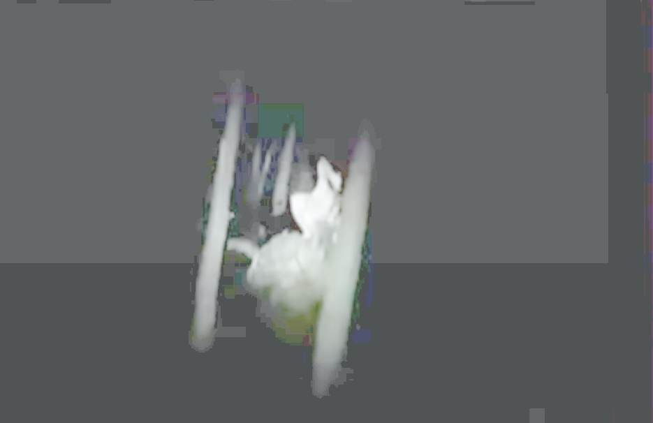

Uncovering the identity of a photo that has become a hot topic among fans of Cryptid creatures.
Preface
- Just recently, I saw a video that dealt with Bigfoot, Dogman, and other bizarre creatures (Cryptid). In the video, two photos of these creatures were shown, both of which were faked. The evidence of the fabrication is explained below.Photographs featured in the video
No.1
No.2
Quotes Video(1:09:15)
HUMANOIDS ROUNDTABLE DISCUSSION - Preston Dennett, Eric Altman, & Anna Marie ManaloIdentity of the strange creature in the photo
No.1
- This photo was already covered in a previous article below. "03/28/11 02:18", which indicates that the photo was taken on 2011-03-28. In other words, it was taken 12 years ago.Whitley Strieber : Outdoor surveillance camera captures scene of strange entity walking (2018-07-08)- This white creature is an ordinary human on stilts. The white creature in the back is probably a child riding on stilts. The white costume covers the whole body and the stilts, but the narrow feet make it clear that it is a stilted horse.ref: https://www.amazon.com/Hijax-Standard-Stilts-Active-America/dp/B000GULV0CNo.2
- Simply adjusting the brightness of this photo reveals it to be a fabrication, as shown below. My Thoughts
- In this video, there are a number of illustrations that seem to be based on eyewitness accounts. However, only the two photos above are shown. In other words, there are many eyewitness accounts of strange creatures, but photos of them are extremely rare. - This situation supports my hypothesis as follows. - Most sightings of cryptids are hallucinations caused by temporary disorientation.Related Past Articles
- The key to understanding the UFO/Bigfoot phenomenon is the temporary disturbance of consciousness. (Verson: 2022-04-07) (2022-04-16) - Illustration of Bigfoot's true identity as captured by outdoor surveillance cameras (2022-04-18)Thanks
- Translated with www.DeepL.com/Translator (free version) (2022-04-24)
First published
Uncovering the identity of a photo that has become a hot topic among fans of Cryptid creatures. (2022-04-24)